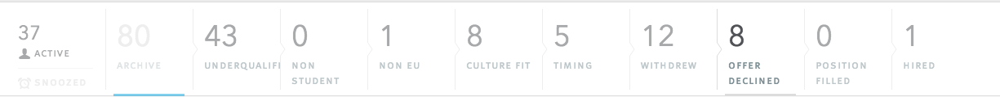
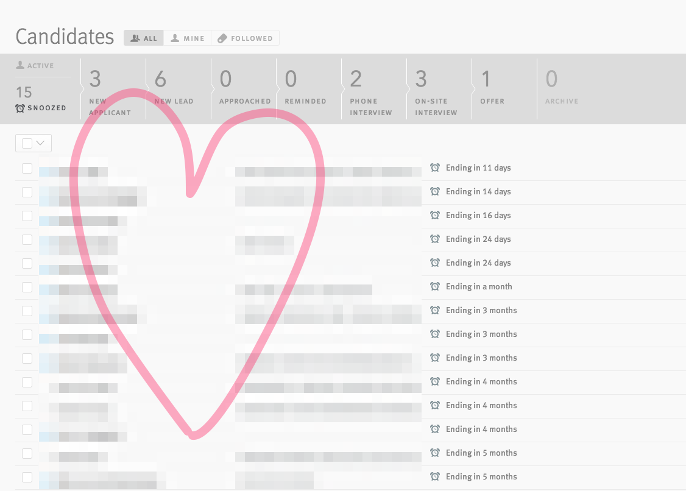

A few weeks ago I promised a story about Lever, and why they should be used when you take hiring seriously. Today, I will talk about how Lever can help you doing better hiring. You know, the things that make you successful as a recruiter.
A few weeks ago I promised a story about Lever, and why they should be used when you take hiring seriously. Today, I will talk about how Lever can help you doing better hiring. You know, the things that make you successful as a recruiter.
I got Lever on my radar when I read Aline Lerner’s blog post about Lever. She starts out with the exact same feeling I have been having for quite some time: ATSs suck big time. It doesn’t matter if you are Taleo, Jobvite, Jobscore or any other thing from this list: you kinda suck. I’ll tell you the one and only reason why they suck: they have no sourcing capabilities (and if they state they do, it’s a lie). The only two products who can effectively manage a pipeline of sourced candidates are Lever and Workable, period.
So, first things first, if you are into sourcing talent, Lever can make it so much easier for you but also for your whole team. Their belief, and I totally back them on this one, is that everyone on the team should help finding talent. This is an invaluably wise thing to evangelise. Developers find better developers, period. Marketing guys can find better marketing guys and I can spot a decent tech recruiter from miles away. This product can get your whole team into sourcing people, instead of just dumping your roles with a recruiter who does not understand the role he is hiring for. They challenge the status quo, the central role of the recruiter / HR for hiring everyone is long overdue, and that’s what makes them such a damn good product to do hiring with in the first place. Lever will empower your whole team to approach the recruiting challenge together.
So how does it work? Like many other PaaS / SaaS products, they have a Chrome extension. This makes it easy to get peoples online profiles in to Lever (Github / LinkedIn / Angel.co / Dribbble). This thing is not exclusively available for recruiters, but for everyone on the (Google Apps) domain. That’s the power of it — you can turn your organisation in a sourcing power machine. I think this approach got adopted from how they work themselves and how many startups do hiring: hire with everyone on the team and make it fun again. At some point recruiting or just hiring new co-workers became a drag because it was so damn hard (and ruined by recruiters). With the right use of Lever and proper training of your team, hiring can become fun again, which it should be.
So that is the main reason I personally love Lever, but I also like it because they have some other aspects that are important. In no specific order: it looks good, it works, it gets updated regularly, it’s (partly) open-sourced and they are very nice people. Lets dig a little deeper:
It looks good
I'll be honest and short about this: I like good looking things. It’s clever use of the modern web standards. It’s a good looking web application. UI is good, UX feels great and they often revise their looks to make it look even better.
It works
Like stated above: Lever has a really good integration tool, a chrome extension that lets you import candidates from sites like LinkedIn, Github, Angel.co, and they are integrating with even more sites as we speak. I already pointed out that Stackoverflow is a must have, as well as Bitbucket, Tech.pro & Coderwall for tech and maybe Behance & Dribble for design. I am not familiar with any other sites Marketing / Sales recruiters utilize, so if you know some that should be added to the tally do comment on this piece.
The tool just works. You install it and whenever you land on a page that Lever integrates with, you can scrape off a candidate’s (shown) information into Lever. It often gives you candidate’s email addresses as well, which is really useful when sourcing. Let me show it to you:
Next to the tool they provide a very good, but lean, ATS (Applicant Tracking System). Scheduling interviews is easy across the board, leaving feedback on candidates is done within seconds and all kind of reports can be made. You can tag people with specifics, there is a snooze button (❤) and you can use the open API to build a killer careers page. For instance, check out the careers page of Clinkle — you can’t even see Lever anymore.
To be honest, hiring is a very administration-heavy job. This administrative aspect is the biggest pain point for me, but with Lever I actually suck less, which can only benefit the people I am trying to hire☺.
Their support is good
Like with any other software, you sometimes need some support from one of their members, or if you are like me, you are missing things that would make the software even more interesting and therefore better to use. They take your requests seriously. ven last week when I visited them, they did a project called ‘Polish’ to fix all the minor issues and take user requests into production that were stacked over the previous period. Also I have seen many product updates in the limited time I have used Lever at 3DHubs.
It is built on open-source technologies
Its all built on open source technologies: Derby.js (whom their CTO Nate Smith is an author of), Share.js and Tributary.io. This gives them an advantage over all the big fish I named before. It will certainly make it easier for your engineers to start liking this software. Also they are currently building out their API’s: which for instance makes the custom build career pages possible. Check out their Github account here.
They are a very nice bunch of people
Last week I had the opportunity to visit Lever HQ in San Francisco. They took me out to dinner, and we discussed the future, the past and the present of recruiting. As some of you might have heard, they recently landed a nice Series A funding lead by Matrix Partners so they are going to scale and push even a better working Lever into the market. This puts a smile on my face, since this market is full of ancient ATSs that need to be overthrown. Every single person I met is bright, young and driven to make their program succeed. You know you will be in good hands when you start using them.
So those are some things that really make my mouth water. It’s all subjective of course, but since I think there will be more people who will take on a pro-active way of hiring and could benefit from software built on those pillars.
The case: 3D Hubs
3D Hubs is a startup from Amsterdam, they recently completed their Series A funding and are going overseas (NYC) to get more API penetration. The service they offer? They allow you to find and order 3D prints from printers in your area. It’s very cool for the 3D printing industry actually.
Now in this case that I am going to describe I had the luxury to hunt developers while using Lever. They needed Front-end (JS/CSS/HTML) and Back-end developers (Drupal/PHP). I did not even have to advise them on getting Lever, simply because their ‘Growth guy’ Rob Draaijer had already implemented Lever long before my arrival (well done).
So, the overview screen is as follows:
As you can see it is my own personal pipeline. This is a snapshot of current state. You can see the underlined green sources. Though it looks like most candidates came from LinkedIn, this isn’t strictly true — I hunt people on Git / StackOverflow / BitBucket / Drupal forums or whatever and then import them through LinkedIn (if I can find their profile). Some guys only have AngelList or Github, and then I import through those sites. Note to self: need to take care of specifying where I got people from, it seems Linkedin is doing an great job now while it I mainly use it for cross referencing or checking up on people (and importing them into Lever ;)).
80 people archived, click it and see it in-depth:

Most of the people have been sourced by me (27 leads, and in the archived slot there are the guys who withdrew etc), doing Stackoverflow searches (tag:Drupal and check out top-answerers in the EU area for them Back-end guys), LinkedIn searches and some Github searches.
The good thing is, if you are in to bulk emailing, you can send out a nice introduction email about the job and company, and why you think they are an added value to your mission. ONLY bulk email people who actually 100% MATCH to the job you are filling, and make it special. Do your research about the people you put in your pipeline. And if you are unsure, ask an engineer if the profile is good. Stop randomly spamming people with random jobs who match your random keywords, (there I said it again).
I always do research and make every introduction specific to the person. Ill give you one tip: it works pretty good to let the people know how you have found them, showing them your boolean search or X-rayed Github / Stackoverflow query and where they rank. I am not going to post screenshots about the emails I send, since I am giving away too much already.
Then, the beloved snooze-button ❤.

So rule of thumb: no-one is looking for a new job at the moment you reach out to them. There are some exceptions but just know that this is a snowball game. The more you reach out, the more matches will be added to your snowball. Reaching out on a creative way also does some advertising work: Developer X to Developer Y: ‘I got this recruiter email the other day, it was actually personal and matching. Finally someone who gets it although I am not really looking. Oh yeah? What company? Oh 3DHubs, they seem a nice bunch’. etc etc. Word of mouth is still very powerful, especially in niche-recruitment projects. But let me get back to the Snooze button. The famous reply: ‘Not really looking right now, but I might be in ‘x’ months. BAM, snooze that guy for 3 months and he will pop up in your screen to be followed up upon then. So, when you do this frequently enough, people will start popping up in your screen all over the place, and that’s what I call the snowball effect of sourcing talent. The power is to have an active pipeline at all time, not to hire people now you needed yesterday.
So in the candidate profile you can schedule interviews, leave feedback, send emails, add or remove followers and check status. I was about to do like 20 screenshots, but why not make one video showing its power:
Then their reporting tool is sophisticated. You can run numbers of reports so the data driven recruiter will have some fun using it.
As a matter of fact, they have one engineer working for them who was solely focussing on data visualisation. The outcome is quite unique and you can definitely run a lot of reports with Lever:
I do want to show you the Conversion Rate (beta) reporting tool, the one I like the most:
The not so good
Unfortunately, Lever does not come without flaws. There are some things that bug me. For instance, I am on currently working on a 13" Macbook and the overviews are hard to manage in such a small screen:
The candidate profile excerpt overlaps the pipeline ☹Posting your jobs to free job boards is not included and will most likely not be in. I kind of like that, since I don’t rely on people from these sources anyway. But for the enterprise businesses I can understand that this is a problem, as they would still get a lot of inflow on their (marketing / sales / whatever) jobs. Jobs on your job board do get picked up by Indeed, I believe, and setting up Glassdoor is easy by just adding the link of your careers site to the Glassdoor settings. All other free job sites: N/A.
Workflows can only be changed with help from one of their team members. I’d like to have freedom creating my own workflows per job, as they differ quite a lot.
I am missing a mobile application that lets me do things remote.
Sometimes bugs pop up, showing inconsistencies as having 5 people on snooze but instead lever is showing you the active candidates. A simple refresh (⌘+R) fixes this, but if it happens frequently I get irritated sometimes. Remember, Lever is still being built and they are on it when it comes to fixing bugs. (The project ‘Polish’ being one that addressed many of them).
One thing I think they can do better is showing how they do data-migration and on-boarding. The fact is the decision of switching ATSs is mostly with a member of the hiring team who will not use it as much and will always throw in ‘The fear of change’. They will come up with all kinds of BS not to change and stick with systems as Taleo, Jobvite or insert any random ATS here. The biggest one is always ‘losing their data’ or ‘training new members’. If Lever would put up more information about how they go about these topics, these so called decision makers would have no reason to stand in the way of change.
Conclusion
All in all, if you are a startup and you are still using spreadsheets, give Lever a try. I have no doubt that you will like it. To get the most out of Lever, right out of the gate, get EVERYONE on your team involved in hiring / recruiting. If you incorporate this mindset from the beginning and embed it in your culture, you will reap the benefits later: a healthy pipeline on any job and people enjoying recruiting instead of dreading it.
For all you recruiters / hiring managers who are reading this and want to change from legacy stuff ASAP, do it. Stop giving your money to products that do not work or are hampering you hiring talent. Start using tools and embrace the fact of change, instead the state of fear.
So that’s about it, I do want to thank some people and products before I conclude this:
Aline Lerner, for being such a kick-ass person when it comes to fixing tech hiring and introducing me to Lever through her original Quora post where she reviews Lever. I really can not recommend her blog and posts highly enough.
Skitch by Evernote, for making such cool tools to edit my screenshots and good old Quicktime to record screencasts☺.
The team of Lever, giving me the apparel to hike Clouds Rest and Glacier Point in Yosemite.
For building this product and for the nice lunch and dinner and time I had with them while visiting San Francisco.
Oh yeah, they are hiring!